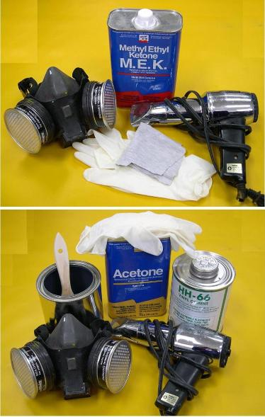

| Prepping and Gluing PVC | Menu Previous Page Next Page |
|  |
The skins are made from 18 oz "Coverlight" PVC. This material has a polyester core that is coated both sides with vinyl. The PVC is glued with HH-66 vinyl cement. Both PVC and vinyl cement can be purchased from Mauritzon Inc. ( See Contacts Page) Prepping the surface 1. MEK is applied with a cloth to clean and prep the surfaces being glued. This process dulls the surface allowing the vinyl cement to adhere better. Apply enough MEK to wet out the surface. Some PVC color will be picked up by the cloth. Moisture is a by-product of MEK . It's critical that the surface dry completely before applying vinyl cement. A heat gun helps by drying the surface quickly before the cement is applied. Gluing PVC 2. Both surfaces to be glued receive 2 or 3 coats of brushed HH-66 vinyl cement thinned 10% with acetone. Each coat is allowed to dry to the touch before the next is applied. As with MEK, a heat gun will speed up the drying process. Apply thin even coats, avoid excess brushing, and be sure there are no areas that have been missed. When in doubt, apply a third coat to insure complete coverage.
After all coats are dry, the overlapping PVC sections are positioned and held in place with masking tape. A heat gun is used to reactivate the glue, and pressure is applied by hand to insure a strong bond. More information on this process will be included in upcoming chapters.
Note: Always wear a respirator and work in a well ventilated area. |